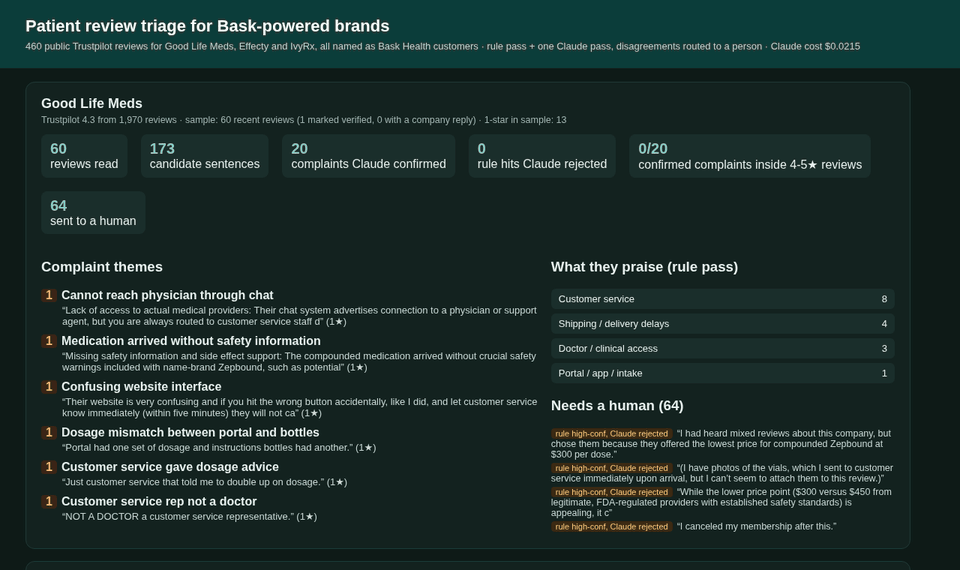

Built by Gursimar Singh, Nov 2026, on real public data

I pulled 460 public Trustpilot reviews for Good Life Meds, Effecty and IvyRx, three brands named on Bask's customer stories. Keyword rules flag shipping, billing and clinical-access issues, Claude confirms which sentences are real complaints, and anything the two disagree on goes to a person. On this run Claude confirmed 40 of 48 packed complaint sentences, including prescriptions never sent, medicine arriving hot, and Klarna billing after a cancel.
What I'd improve next: pull the rest of Good Life Meds' 1,970 Trustpilot reviews (this scrape only returned 60) and sample mid-star reviews, since this pack was heavy on 1-star text.